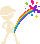

Jonniepeed GamesThimbleful
Caught0
Chances
Best0
Drag anywhere on the scene to move. On a keyboard, use the arrow keys, and M to mute.

Jonniepeed GamesDrag anywhere on the scene to move. On a keyboard, use the arrow keys, and M to mute.